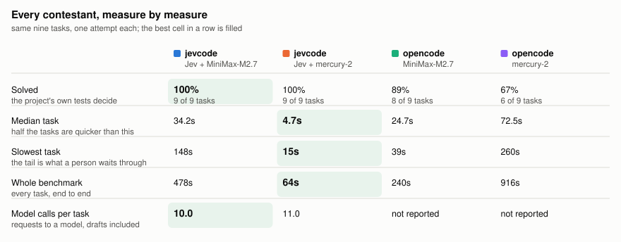
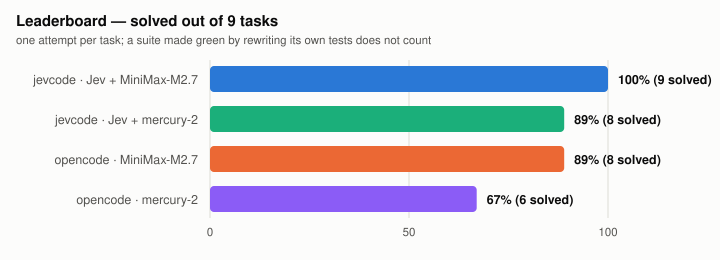
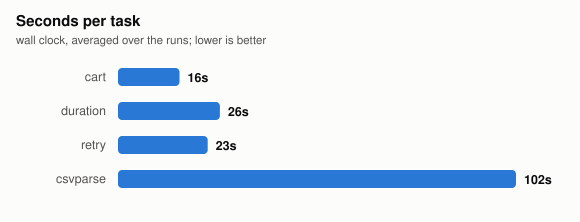
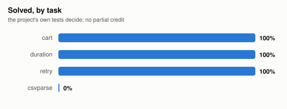
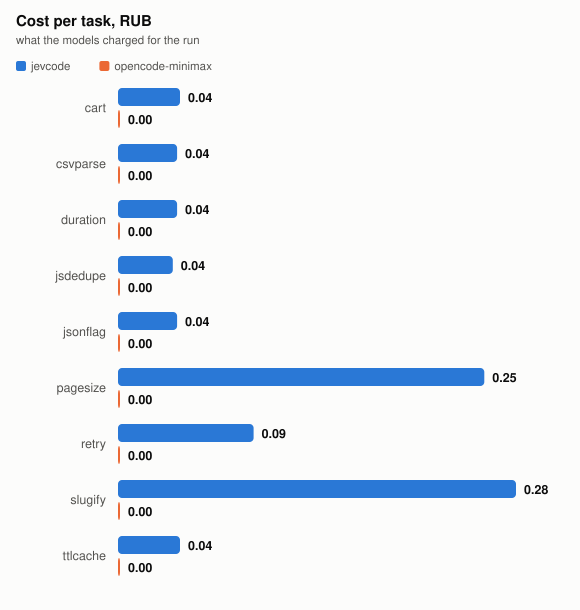
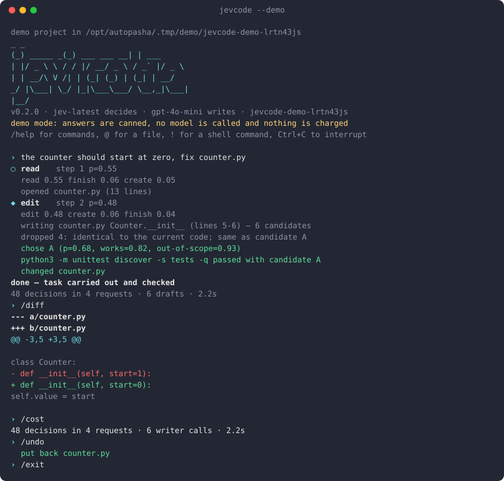

v0.2 · MIT · no index, no vectors
Jev answers typed questions — is this true, which of these, where on this scale — with calibrated probabilities: 256 in one request, about 200 ms, a hundredth of a cent. So jevcode asks about everything before it moves, and a small fast model does the typing under instructions it never chose.
No key to look around: jevcode --demo runs the whole
interface off a canned table, in a throwaway copy of a sample project.
$ jevcode "make Cart.total accept a discount argument, taken off before tax" step 1 search p=0.50 conf=0.54 searched 'Cart' → 2 files step 2 read p=0.90 conf=0.98 opened cart.py (21 lines) step 3 edit p=0.80 conf=0.86 writing cart.py Cart.total (lines 14-15) — 6 candidates dropped 4: same as candidate A chose A (p=0.72, works=0.93, out-of-scope=0.10) python3 -m unittest discover -s tests -q passed done — task carried out and checked 73 decisions in 6 requests (5.2s, 41k tokens in) 6 writer calls (12.6s) · 7.6s total
The trade
An ordinary coding agent spends its budget on deliberation: every step replays a growing transcript through a large model. Steps are slow, expensive and precious, which is why such an agent commits to the first plausible move and finds out about the alternatives by walking into them.
| ordinary agent | jevcode | |
|---|---|---|
| a decision | seconds, cents, a full context replay | ~200 ms, ~$0.0001, no transcript |
| decisions per step | one | dozens, in one request |
| looking ahead | take the step and find out | score the whole tree first |
| picking among drafts | keep the first one | write six, judge six, keep the best |
| checking a command | a deny list of regexes | three questions about this exact command |
| context growth | every file read stays in the prompt forever | state is assembled per question |
That last row matters more than it looks. Nothing accumulates in a prompt here: the state handed to Jev is built fresh for each question, so a long session never slowly poisons itself with everything it has ever read.
One step
The decision itself and the arguments for each action it might choose go out together. Most of the answers are thrown away — whichever the chosen action does not need. They are speculative on purpose: a hundred extra questions cost about as much as one.
{ "action": choice({read, search, edit, create, run, finish}), "file": choice(up to 255 files, described), "region": choice(the functions and classes of the open file), "command": choice(what the project declares: make, npm, pytest), "query": choice(literal strings taken from the task), "done": noul("carried out AND confirmed by a command?"), "needs_human": noul("a decision only the owner can make?"), "worth_read", "worth_edit": noul("would this produce anything new?"), }
An edit asks the writer for six drafts at once. Drafts that do not parse, came back empty, or match the current code are dropped in Python before anything is judged — facts first, opinion second. If the tests reject the winner, the runner-up is already written and already judged.
Would this destroy work, is it unrelated to the task, does it reach
outside the repository — asked about the actual command, every time. A
deny list only catches the shapes somebody thought of; this reads
find . -delete the way a person does.
A missing test runner fails exactly like a wrong change. The output is scored on a four-level rubric, and an environment fault keeps the edit instead of throwing away a change that was fine.
A beam search over future actions: each branch carries its own assumed history, each question addresses its branch by path, so one request answers "what next" for the whole frontier. Width three, depth three, about a second.
Measured, not claimed
Nine tasks, one attempt each, run 2026-09-20 on commit 0e4f21b. Each agent is shown with both writers it was measured on; the head-to-head pair shares one. Test files and Makefiles are checksummed, so a suite made green by rewriting its own tests does not count, and a run that edits the original task library instead of its own copy is not scored at all.





| task | solved | decisions | requests | wall |
|---|---|---|---|---|
| cart | yes | 14 | 1 | 23.1s |
| csvparse | yes | 14 | 1 | 51.0s |
| duration | yes | 14 | 1 | 22.5s |
| jsdedupe | yes | 14 | 1 | 14.3s |
| jsonflag | yes | 14 | 1 | 22.6s |
| pagesize | yes | 82 | 6 | 83.1s |
| retry | yes | 30 | 2 | 65.5s |
| slugify | yes | 81 | 7 | 57.2s |
| ttlcache | yes | 14 | 1 | 12.4s |
| agent | solved | median time | cost per task |
|---|---|---|---|
| jevcode · Jev + MiniMax-M2.7 | 9/9 (100%) | 23.1s | 0.10 RUB |
| opencode · MiniMax-M2.7 | 8/9 (89%) | 24.7s | — |
| jevcode · Jev + mercury-2 | 8/9 (89%) | 10.0s | 0.70 RUB |
| opencode · mercury-2 | 6/9 (67%) | 72.5s | — |
What the judge adds. The writer produces N drafts for 80 HumanEval tasks, the tests decide which work, and Jev picks without ever seeing them: llama-3.2-3b goes from 49% one-shot to 78%, against a ceiling of 85% — 1148 questions in 80 requests. With a writer already at 94% there is nothing left to win, and it wins nothing.
Finding the right file with no index at all. Fifteen questions about this repository, each with a known answer, every run reading the tree from scratch: 30 questions in 15 requests, 12 seconds. Nothing to embed, nothing to keep fresh.
The head-to-head against another terminal agent lands here after the next
run. The harness is already in the repository — bench/compare.py,
a plain list of command templates — because putting another agent's name in
a table before it has run would be worse than an empty section.
In the terminal
jevcode with no arguments opens a session in the current
directory. Everything scrolls, everything can be copied out, and the only
thing that repaints is the status line.

Recorded with jevcode --demo, which answers from a table so the
interface can be shown without a key.
The same recording moving, and the raw cast
beside it if you would rather replay it yourself.
@path puts a file in front of the agent, matched on any
tail of its path.!command runs a shell command yourself without leaving.jevcode -c
carries on, /sessions lists them.AGENTS.md is read if the project has one — the same file
the other terminal agents look for.| command | |
|---|---|
| /new /clear | start over |
| /sessions /resume | list and switch |
| /undo /redo | move the files back and forward |
| /diff | everything this session changed |
| /cost | decisions, requests, seconds, money |
| /models /model | who decides, who writes, swap the writer |
| /details | show or hide each decision as it is made |
| /permission | ask, allow or deny — how much it asks |
| /init | write an AGENTS.md |
Install
pipx install git+https://github.com/AutoPasha/jevcode
# or: uvx --from git+https://github.com/AutoPasha/jevcode jevcode "..."
export TYPESAFE_API_KEY=... # console.typesafe.ai/keys export JEVCODE_WRITER_KEY=... # any OpenAI-compatible endpoint export JEVCODE_WRITER_URL=https://api.openai.com/v1/chat/completions export JEVCODE_WRITER_MODEL=gpt-4o-mini
The writer should be small and fast. It is asked for six drafts at a time and judged on all six, so throughput is worth more here than pedigree. Any gateway speaking the same protocol works in place of TypeSafe.
jevcode # a session here jevcode -c # carry on where you left off jevcode run "rename the --verbose flag to --loud everywhere" jevcode where "the retry backoff" # find code, two requests jevcode plan "add a discount to Cart.total" # three moves ahead jevcode stats --days 7 # what it has cost you
Honestly
Jev is a System One model and its rough edges are documented by the people who trained it. It reads literally, it does not count, it is not a calculator, and accuracy drops as irrelevant detail piles into the state. Everything numeric in this agent is done in Python for that reason.
{kind=link}